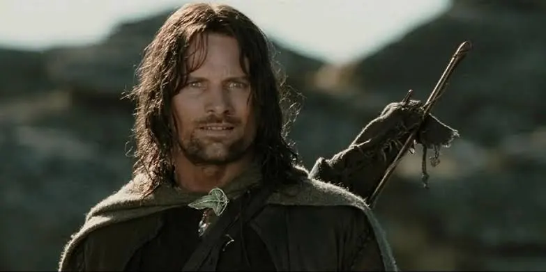

El discurso de Aragon
!No se retiren! ¡No se retiren!, Hijos de Gondor y Rohan, mis hermanos. E visto en sus ojos el mismo temor que estruja nuestras almas, talvez venga el dia en que el corazon del hombre se rinda, y que olvidemos a los amigos y rompamos todo lazo de amistad, ¡pero este no es el dia!, una hora de lobos y escudos desechos cuando la era del hombre se volvera añicos. ¡Pero este no es el dia! ¡Este dia hay que pelear! ¡ Por todo lo que mas quieran, sobre esta tierra hoy deben resistir! ¡ Hombres del Oeste !
El fachero2 es gay
